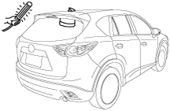

ขั้นตอนการตรวจยืนยัน 3: การตรวจสอบทั่วไปของระบบเสาอากาศ [วิทยุ]
id0903e3804200
• เนื่องจากระบบเสาอากาศเป็นอุปกรณ์ที่มีคาปาซิเตอร์ จึงไม่สามารถตรวจสอบความต่อเนื่อง ดังนั้นให้ดำเนินการตรวจสอบทั่วไปดังต่อไปนี้
1. เปิดวิทยุคลื่น AM
2. หมุนไปที่คลื่นความถี่ที่ไม่มีการกระจายคลื่น และคุณจะได้ยินเสียงหึ่งๆ
3. เปิดไฟสปอร์ตไลท์ และขยับรอบๆ เสาอากาศ (ห่างประมาณ 10—20 mm {0.40—0.78 in})
หมายเหตุ
• ใช้ชนิดหลอดเรืองแสงสำหรับการตรวจสอบ การใช้ไฟชนิดอื่นๆ อาจทำให้การวิเคราะห์ไม่ถูกต้อง

ac5wzw00002516
4. หากมีเสียงเตือนดังจากลำโพงขณะที่เลื่อนไฟสปอร์ตไลท์ไปรอบๆ แสดงว่าเสาอากาศเป็นปกติ